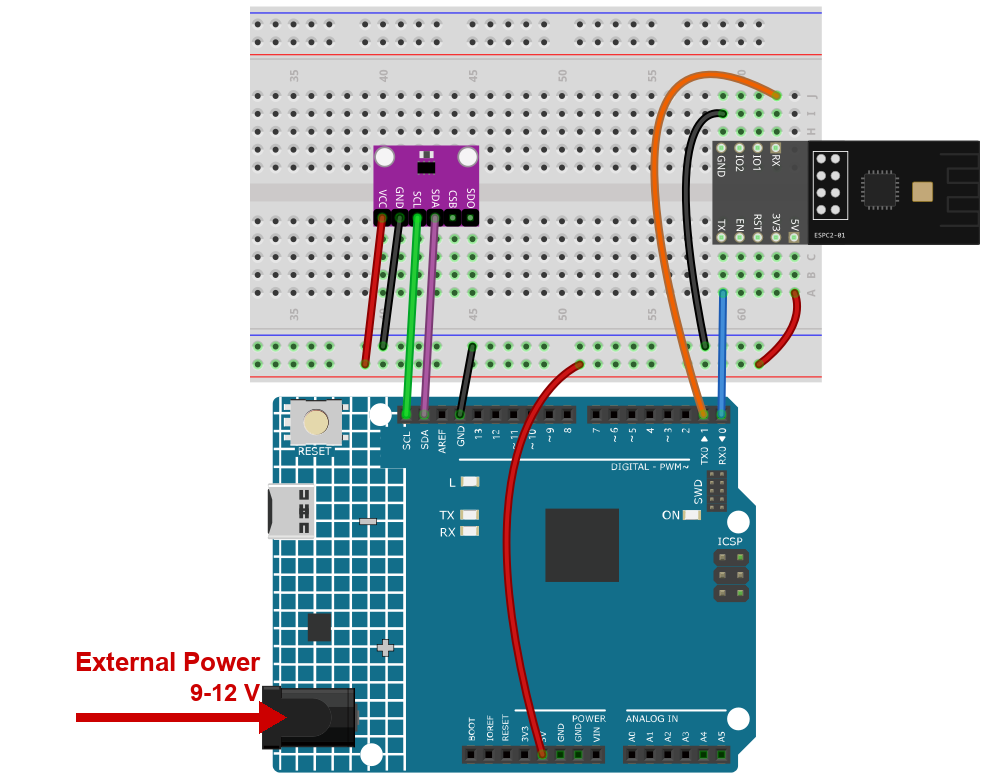
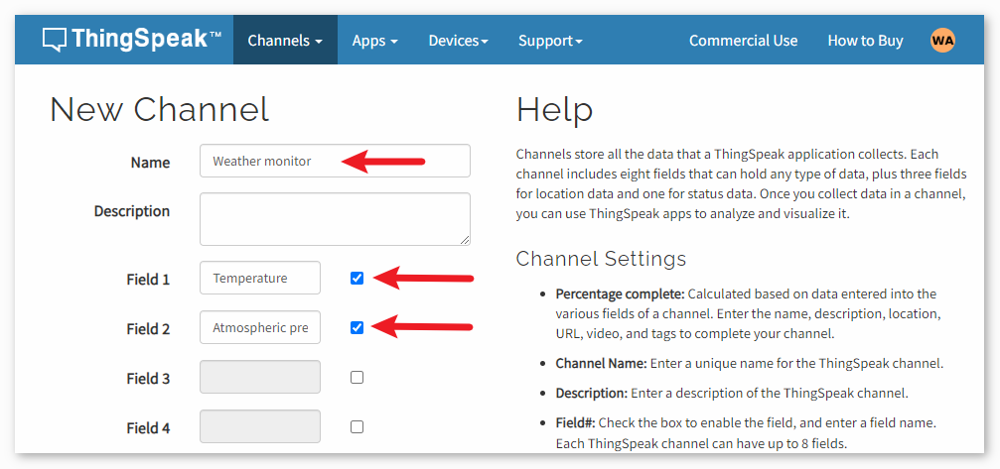

Note
Hello, welcome to the SunFounder Raspberry Pi & Arduino & ESP32 Enthusiasts Community on Facebook! Dive deeper into Raspberry Pi, Arduino, and ESP32 with fellow enthusiasts.
Why Join?
Expert Support: Solve post-sale issues and technical challenges with help from our community and team.
Learn & Share: Exchange tips and tutorials to enhance your skills.
Exclusive Previews: Get early access to new product announcements and sneak peeks.
Special Discounts: Enjoy exclusive discounts on our newest products.
Festive Promotions and Giveaways: Take part in giveaways and holiday promotions.
👉 Ready to explore and create with us? Click [here] and join today!
5. Weather Monitor with ThingSpeak
This project collects temperature and pressure data using an Atmospheric Pressure Sensor. The collected data is then transmitted to the ThingSpeak cloud platform through the ESPC2-01 module and the Wi-Fi network at regular time intervals.
1. Build the Circuit
Note
The module draws a high current at start-up, so make sure the 9 V battery or an external power supply is plugged into the DC jack of the R4 Minima.


2. Configure ThingSpeak
ThingSpeak ™ is an IoT analytics platform service that allows you to aggregate, visualize and analyze live data streams in the cloud. ThingSpeak provides instant visualizations of data posted by your devices to ThingSpeak. With the ability to execute MATLAB® code in ThingSpeak you can perform online analysis and processing of the data as it comes in. ThingSpeak is often used for prototyping and proof of concept IoT systems that require analytics.

2.1 Creating ThingSpeak Account
The first thing you need to do is to create an account with ThingSpeak. Since the collaboration with MATLAB, you can use your MathWorks credentials to login to ThingSpeak .
If you do not have one, you need to create an account with MathWorks and login to ThingSpeak Application.

2.2 Creating the channel
After logging in, create a new channel to store the data by going to “Channels” > “My Channels” and clicking on “New Channel”.

For this project, we need to create a channel called “Weather Monitor” with two fields: Field 1 for “Temperature” and Field 2 for “Atmospheric Pressure”.


3. Run the Code
Open the
05-Weather_monitor.inofile under the path ofultimate-sensor-kit\code\iot_project_espc201\wifi\05-Weather_monitor, or copy this code into Arduino IDE.Note
The sketch needs the Adafruit BMP280 library. Open the Library Manager, search for
Adafruit BMP280and install it.Type the name and the password of your own Wi-Fi network.
String mySSID = "your_ssid"; String myPWD = "your_password";
Paste the Write API Key of your ThingSpeak channel into
myAPI.String myAPI = "xxxxxxxxxxxxxxx";

Note
Use the Write key of the channel, not the Read key, and not the User key. Keep it private: anyone with that key can push data into your channel.
Select Arduino UNO R4 Minima and the right port, then click Upload.
Open the Serial Monitor at 115200. After a few seconds you should read:
=== Weather Monitor (ThingSpeak) === module is ready joining Wi-Fi ... connected BMP280 is ready
and then, every 20 seconds:
> AT+CIPSTART="TCP","api.thingspeak.com",80 > AT+CIPSEND=96 update sent to ThingSpeak Temperature: 27.31 C. Pressure: 100842.00 Pa
Note
If you read
Could not find a BMP280, check the wiring and the address, run the I2C scanner or simply try the other address: some modules answer on0x77instead of0x76. The sketch already tries both, so this message means neither one answered - check SDA, SCL, VCC and GND.

Open your ThingSpeak channel. A new point appears on the graph every 20 seconds.
Note
A free ThingSpeak channel accepts one update every 15 seconds. The sketch waits 20, so you never lose a point.
4. Code explanation
This project does not use Blynk. The board talks to ThingSpeak with plain HTTP over the AT commands, exactly like a browser asks for a web page - which is why you can watch the values in any browser afterwards.
What you have to fill in
String mySSID = "your_ssid"; String myPWD = "your_password"; String myAPI = "xxxxxxxxxxxxxxx"; String myHOST = "api.thingspeak.com"; String myPORT = "80";
The host and the port never change. Only the API key is personal - it tells ThingSpeak which channel the numbers belong to.
The serial port that talks to the module
The ESPC2-01 works as a modem: the sketch sends it AT commands on D0/D1, which is
Serial1, a hardware port, so 115200 works without bit errors.#define EspSerial Serial1espModuleInit()waits for the module to finish booting and then sendsATE0to switch the echo off. Without it the boot log and the echoed commands end up mixed into the replies.at() - one AT command, with a time limit
String at(const String& cmd, unsigned long waitMs, const char* okMark, const char* errMark) { while (EspSerial.available()) EspSerial.read(); EspSerial.print(cmd); EspSerial.print("\r\n"); unsigned long t0 = millis(); String r; while (millis() - t0 < waitMs) { while (EspSerial.available() && r.length() < 512) r += (char)EspSerial.read(); if (okMark && r.indexOf(okMark) >= 0) break; if (errMark && r.indexOf(errMark) >= 0) break; } return r; }
Every command goes through this one function. It stops as soon as the expected answer arrives, and it always returns, so a missing
OKcan never freeze the board.joinWiFi()
at("AT+CWMODE=1", 1500, "OK", "ERROR"); String r = at("AT+CWJAP=\"" + mySSID + "\",\"" + myPWD + "\"", 20000, "WIFI GOT IP", "FAIL");
AT+CWJAPneeds several seconds - the module has to find the access point, exchange the keys and get an IP address. That is why it is given 20 seconds while the other commands only need one.The BMP280
if (!bmp.begin(BMP280_ADDRESS)) { if (!bmp.begin(0x77)) { ... // give up, there is nothing to measure } }
The chip answers on
0x76or0x77depending on how its SDO pin is wired, so the sketch tries both before it gives up.loop() - a timer without delay()
if (millis() - lastConnectionTime > postingInterval) { sendData(); }
millis()counts the milliseconds since power-up. Comparing it with the last update is a delay that does not stop the program - the board stays free to do anything else. A free ThingSpeak channel accepts one update every 15 seconds, so 20 seconds is a safe interval.sendData() - build the request and push it out
String req = "GET /update?api_key=" + myAPI; req += "&field1=" + String(temperature); req += "&field2=" + String(pressure); req += " HTTP/1.1\r\nHost: api.thingspeak.com\r\nConnection: close\r\n\r\n"; at("AT+CIPMUX=0", 1000, "OK", "ERROR"); at("AT+CIPSTART=\"TCP\",\"" + myHOST + "\"," + myPORT, 5000, "OK", "ERROR"); EspSerial.print("AT+CIPSEND="); EspSerial.print(req.length()); ... EspSerial.print(req);
Three AT commands do the work:
AT+CIPMUX=0- one connection at a time.AT+CIPSTART- open a TCP connection toapi.thingspeak.com:80.AT+CIPSEND=<length>- the module answers with>, and only then you send the request. The length must be the exact number of characters ofreq, which is why the sketch measuresreq.length()instead of guessing.
field1andfield2are the two columns of your channel. Whatever you name them in ThingSpeak, the numbers land there in that order.